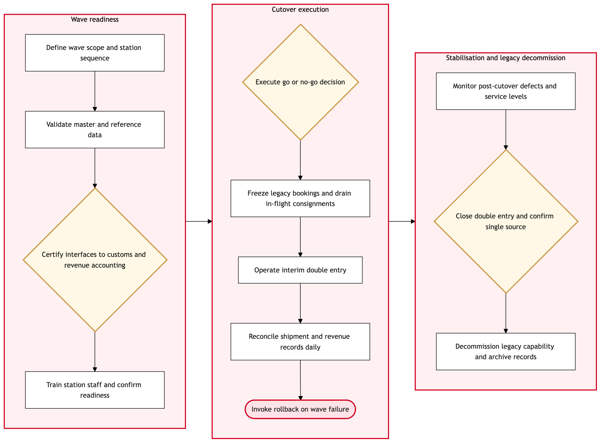

Updated 2026-08-18
Cargospot neo Migration Cutover Control
Process flow
Click to zoom

Process steps
▼
Phase 1 — Wave readiness
4 steps
| Step | Activity | Role | System | Input | Output | KPI | Dec | Exc | Pain point |
|---|---|---|---|---|---|---|---|---|---|
| 1.1 | Define wave scope and station sequence | Cargo Migration Lead | ITSM PlatformC | Migration plan and station profile | Approved wave scope with entry and exit criteria | Wave scope frozen 4 weeks before cutover | N | N | Station-level process variance is discovered late because it is not documented centrally |
| 1.2 | Validate master and reference data | Cargo Data Analyst | CHAMP Cargospot neoA | Legacy rates, routes, agents and ULD registers | Migrated reference data with reconciliation report | Reference data reconciliation variance below 0.5 percent | N | N | Legacy rate and agent data carries years of uncontrolled local edits |
| 1.3 | Certify interfaces to customs and revenue accounting | Integration Analyst | Canada PACTB | Interface specifications | Certified interfaces for pre-load filing and settlement | All regulated interfaces certified before go-live | Y | N | Pre-load filing has no tolerance for interface downtime once the wave is live |
| 1.4 | Train station staff and confirm readiness | Cargo Operations Manager | Cargospot MobileA | Training curriculum and station roster | Signed station readiness confirmation | 95 percent of station staff certified before cutover | N | N | Warehouse shift patterns make it hard to train a full station inside the wave window |
▼
Phase 2 — Cutover execution
5 steps
| Step | Activity | Role | System | Input | Output | KPI | Dec | Exc | Pain point |
|---|---|---|---|---|---|---|---|---|---|
| 2.1 | Execute go or no-go decision | Cargo Migration Lead | ITSM PlatformC | Readiness evidence pack | Go or no-go decision with recorded rationale | Decision taken at least 48 hours before the cutover window | Y | N | Readiness evidence arrives too close to the gate for genuine scrutiny |
| 2.2 | Freeze legacy bookings and drain in-flight consignments | Cargo Operations Manager | CHAMP Cargospot neoA | Open consignment list | Legacy platform frozen with in-flight shipments identified | Zero consignments stranded across the freeze boundary | N | N | Consignments already in transit span both systems for the duration of the freeze |
| 2.3 | Operate interim double entry | Cargo Agent | CHAMP Cargospot neoA | Consignment details at acceptance | Shipment recorded in both legacy and Cargospot | Double-entry variance below 1 percent of consignments | N | N | This is the migration's live manual re-key risk and the main source of revenue-accounting variance |
| 2.4 | Reconcile shipment and revenue records daily | Cargo Revenue Analyst | Cargospot neo Revenue AccountingA | Legacy and Cargospot shipment extracts | Daily reconciliation with exception list | Reconciliation completed within 24 hours of each operating day | N | N | Reconciliation is performed in spreadsheets against two extracts with different keys |
| 2.5 | Invoke rollback on wave failure | Cargo Migration Lead | ITSM PlatformC | Defect severity assessment | Controlled rollback with consignment integrity confirmed | Rollback completed within the agreed 4-hour window | N | Y | Rollback has not been rehearsed end to end with live consignment data |
▼
Phase 3 — Stabilisation and legacy decommission
3 steps
| Step | Activity | Role | System | Input | Output | KPI | Dec | Exc | Pain point |
|---|---|---|---|---|---|---|---|---|---|
| 3.1 | Monitor post-cutover defects and service levels | Cargo Operations Manager | ITSM PlatformC | Incident and defect queue | Stabilisation report against exit criteria | Priority 1 defects closed within 24 hours | N | N | Defects raised at a station are hard to distinguish from training gaps |
| 3.2 | Close double entry and confirm single source | Cargo Revenue Analyst | Cargospot neo Revenue AccountingA | Clean reconciliation across the stabilisation period | Double entry stopped for the wave | Double entry closed within 14 days of cutover | Y | N | Stations retain the legacy entry informally as a safety net, extending the risk window |
| 3.3 | Decommission legacy capability and archive records | Cargo Migration Lead | ITSM PlatformC | Migration completion evidence | Legacy capability retired with records archived for retention | Legacy decommissioned within 90 days of final wave | N | N | Retention obligations on historic air waybills are not fully mapped to the legacy archive |
Swim lanes
Cargo Migration Lead1.1 2.1 2.5 3.3
Cargo Data Analyst1.2
Integration Analyst1.3
Cargo Operations Manager1.4 2.2 3.1
Cargo Agent2.3
Cargo Revenue Analyst2.4 3.2
Systems touched
ITSM PlatformCCHAMP Cargospot neoACanada PACTBCargospot MobileACargospot neo Revenue AccountingACargospot neo HandlingAOnAsset VisionB
Key performance indicators
- Double-entry variance below 1 percent of consignments during the interim period
- Zero consignments stranded across a cutover freeze boundary
- Pre-load customs filings unaffected by cutover at 100 percent
- Double entry closed within 14 days of each wave cutover
- Priority 1 post-cutover defects closed within 24 hours
Risks and control points
- Interim double entry producing divergent shipment records with direct revenue-accounting consequences
- Pre-load customs filing interrupted during a cutover window, exposing shipments to CBSA holds
- Unrehearsed rollback leaving consignments recorded in neither platform
- Legacy reference data carrying uncontrolled local edits into the new platform
- Stations retaining legacy entry informally after the wave, extending the double-entry risk window
Air Canada Process Wiki — process and systems reference compiled from public sources
for IT Application Management and User Support pre-sales discovery.
Built 2026-08-21. Every system carries an evidence tier: tier C is an industry pattern and tier U is an open
question, and neither should be asserted as fact about Air Canada without confirmation in discovery.
Not affiliated with or endorsed by Air Canada. Air Canada, Aeroplan and Altitude are trademarks of Air Canada.